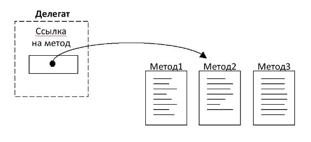
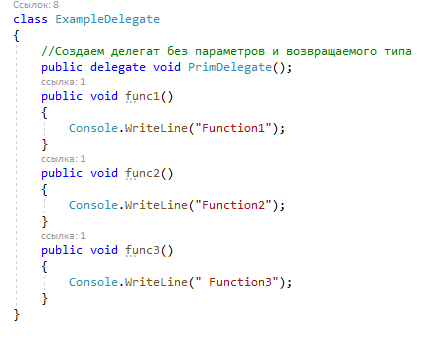
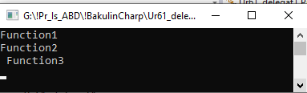

«Делегат ссылается на метод и после назначения метода ведёт себя идентично ему. Делегат можно использовать как любую функцию с параметром и возвращаемым значением».
Несмотря на то, что .NET использует концепцию функционального указателя посредством делегатов, есть несколько существенных отличий:
- делегаты нечувствительны к ошибкам ввода;
- объектно-ориентированы;
- безопасны.
Делегаты C# обладают следующими свойствами:
- позволяют обрабатывать методы в качестве аргумента;
- могут быть связаны вместе;
- несколько методов могут быть вызваны по одному событию;
- тип делегата определяется его именем;
- не зависят от класса объекта, на который ссылается;
- сигнатура метода должна совпадать с сигнатурой делегата.
Синтаксис
Шаг 1 — Объявление
Шаг 2 — Инициализация
Делегат инициализируется путём передачи ему имени метода в качестве аргумента.
Шаг 3 — Вызов
Вызываем созданный делегат с указанием параметров, если это необходимо.
В нашем примере:

Из примера видно, что мы по-разному реагируем на происходящее в зависимости от хода развития события. В программировании эту вариативность реакций привносит делегат — он отслеживает события Event и реагирует на изменение исходной ситуации, запуская созданные заранее пронумерованные методы.
Шаг 1 — Объявление
public delegate void PrimDelegate();
Создание методов для различной реализации: Функция (метод), добавляемая к делегатам, должна иметь тот же тип и сигнатуру, что и делегат;

Шаг 2 — Инициализация
ExampleDelegate PrimDelegate = new ExampleDelegate(); //вызов конструктора класса
Шаг 3 — Вызов
//прикрепляем делегату методы
ExampleDelegate.PrimDelegate fd1 =
new ExampleDelegate.PrimDelegate(PrimDelegate.func1);ExampleDelegate.PrimDelegate fd2 =
new ExampleDelegate.PrimDelegate(PrimDelegate.func2);ExampleDelegate.PrimDelegate fd3 =
new ExampleDelegate.PrimDelegate(PrimDelegate.func3); //Вызываем методы через делегатfd1();
fd2();
fd3();
Результат:

Пример 1
Нижеприведённый код складывает между собой два числа:
using System;
using System.Collections.Generic;
using System.Linq;
using System.Text;
namespace DelgateForNotes
class Program
{
// Объявление делегата, ссылающегося на функцию
// с двумя параметрами и целочисленным результатом
public delegate int AddDelegate(int num1, int num2);
static void Main(string[] args)
{
// Создание метода делегата и передача функции Add в качестве аргумента
AddDelegate funct1 = new AddDelegate(Add);
// Вызов делегата
int k = funct1(7, 2);
Console.WriteLine("Sumation = {0}", k);
Console.Read();
}
// Статическая функция Add с той же сигнатурой, что и у делегата
public static int Add(int num1, int num2)
{
Console.WriteLine("I am called by Delegate");
int sumation;
sumation = num1 + num2;
return sumation;
}
}
Выводом будет следующий результат:

BubbleSortClass
Student
ProgramBubbleSortClass.cs
using System; using System.Collections.Generic; using System.Linq; using System.Text; namespace DelgateForNotes { public class BubbleSortClass { static public void Sort(object[] sortArray, CompareDelegate gtMethod) { for (int i = 0; i < sortArray.Length; i++) { for (int j = 0; j < sortArray.Length; j++) { if (gtMethod(sortArray[j], sortArray[i])) { object temp = sortArray[i]; sortArray[i] = sortArray[j]; sortArray[j] = temp; } } } } } }
Этот класс будет содержать статическую функцию Sort(),
у которой нет возвращаемого значения. В качестве аргумента она
принимает массив, который будет отсортирован путём сравнивания
пар элементов.
Student.cs
Объект этого класса и будет использован для сортировки.
using System.Collections.Generic;
using System.Linq;
using System.Text;
namespace DelgateForNotes
class Student
{
private string name;
private int rollno;
private int marks;
// Инициализация объекта класса
public Student(string name, int rollno, int marks)
{
this.name = name;
this.rollno = rollno;
this.marks = marks;
}
// Переопределение метода для вывода результата
public override string ToString()
{
return string.Format("Name => {0}, RollNumber => {1}, Marks => {2} ", name, rollno, marks);
}
// Пользовательская функция сравнение, возвращающая булевое значение
public static bool RhsIsGreater(object lhs, object rhs)
{
Student stdLhs = (Student)lhs;
Student stdRhs = (Student)rhs;
return stdRhs.marks > stdLhs.marks;
}
}
Program.cs
Код основной программы. Здесь создаётся делегат и выводится отсортированный массив.
using System.Collections.Generic;
using System.Linq;
using System.Text;
namespace DelgateForNotes
public class Program
{
// Объявление делегата, ссылающегося на функцию
// с двумя параметрами и выводом булевого типа
public delegate bool CompareDelegate(object lhs, object rhs);
static void Main(string[] args)
{
// Создание массива объектов класса Student.cs
Student[] students = {
new Student("Mark", 1, 799),
new Student("David", 2, 545),
new Student("Lavish", 3, 999),
new Student("Voora", 4, 228),
new Student("Boll", 5, 768),
new Student("Donna", 6, 367),
new Student("Adam", 7, 799),
new Student("Steve", 8, 867),
new Student("Ricky", 9, 978),
new Student("Brett", 10, 567)
};
// Создание делегата с передачей
// статического метода класса Student в качестве аргумента
CompareDelegate StudentCompareOp = new CompareDelegate(Student.RhsIsGreater);
// Вызов статического метода класса BubbleSortClass,
// передача массива объектов и делегата
BubbleSortClass.Sort(students, StudentCompareOp);
for(int i = 0; i < students.Length; i++)
{
Console.WriteLine(students[i].ToString());
}
Console.Read();
}
}
Мультикаст-делегаты
Делегаты, включающие в себя более одного метода, называются мультикаст-делегатами. При вызове они выполняют каждый метод в заданном порядке, позволяя таким образом связывать несколько методов в цепочку.
Для работы мультикаст-делегатов те не должны возвращать какой-либо результат. В противном случае обработается результат последнего метода цепочки.
Пример 3
Пример использования мультикаст-делегата для вывода приветствия:
using System.Collections.Generic;
using System.Linq;
using System.Text;
namespace MulticastDelegate1
class Program
{
// Объявление делегата, ссылающегося на метод
// с результатом типа void и одним строковым аргументом
public delegate void showDelegate(string s);
static void Main(string[] args)
{
showDelegate s = Display;
s += Show;
s("Hello");
s("Scott");
Console.Read();
}
// Пользовательская функция для отображения результата
public static void Display(string title)
{
Console.WriteLine(title);
}
// Пользовательская функция для вывода
public static void Show(string title)
{
Console.WriteLine(title);
}
}

Пример 4
Данный код умножает полученное число на два и возводит его же в квадрат:
using System.Collections.Generic; using System.Linq; using System.Text; namespace MulticastDelegate { // Пользовательский класс для математических операций, // содержит два статических метода class MathOperation { // Метод умножения числа на 2 public static void MultiplyByTwo(double d) { double res = d * 2; Console.WriteLine("Multiply: " + res.ToString()); } // Метод возведения числа в квадрат public static void Squre(double e) { double res = e * e; Console.WriteLine("Square" + res.ToString()); } } class NewProgram { // Объявление делегата public delegate void del(double Qr); static void Main() { // Создание делегата del d = MathOperation.MultiplyByTwo; // Добавление метода к делегату d += MathOperation.Squre; // Вызов функции отображения, // в качестве аргументов — имя делегата и число типа double Display(d, 2.00); Display(d, 9.9); Console.ReadLine(); } // Пользовательская функция для вывода результата static void Display(del action, double value) { Console.WriteLine("Result = " + value); action(value); } }